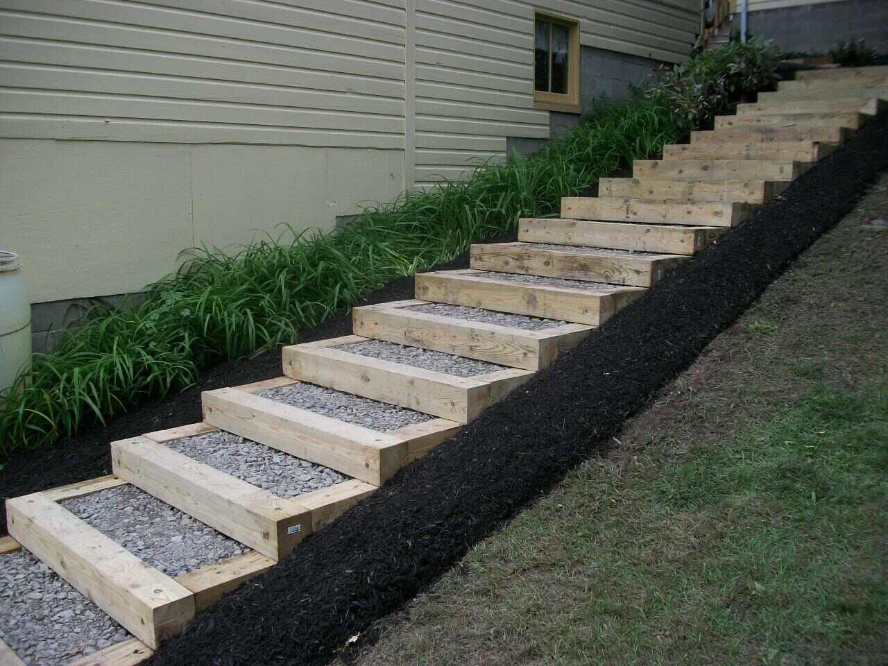

I have always had a passion for tech, but wasn't quite a part of it till December last year(2023) when a friend of mine revealed to me how he had to start working as a web designer even though he graduated as an artist(He studied art in school). He further explained that it is only with luck and connection that one is able to gain employment in nigeria, and as such had to practice designing to gain a job. When he eventually got the job as a web designer, he started learning more(web designing) on-the-job. He made me realize that tech offers the opportunity to work anywhere and advised me to learn a tech skill so i don't have to rely solely on my school qualifications alone. I started learning web design early this year, sometime around early January(2024), but along the way got interested in the building and functionality of the design; instead of just designing for someone else to build the website, why can i not build the website? And like that, I was swept into the world of web development.
My Tech Journey
My Upskill Objective & Aspirations

I joined the Genesys Upskill program by virtue of luck through a friend of mine who saw that learning web development was giving me a tough time, and also knew i could not pay for actual classes. He told me about Upskill and how it was a free program and how joining would present me with opportunities and, with luck, maybe even gain me actual employment.
The aim is to start with Genesys Upskill, then i pay for and receive a certificate of completion after completing the course. From there, I'll apply for and join the learnable program and after completing the program and receiving my certificate, hopefully as i've heard, be able to learn and work there as an intern, and hopefully again, be retained to work as a frontend developer.
The End goal is to become a fullstack developer though, but i guess just like everyone else, I need to start somewhere first to get to somewhere. And I believe it's a step by step process; the more i practice and work on frontend projects, the better i get. And the better i get, the easier it is to integrate myself into backend and learn it also, step by step.
FAQ
I LOVED THE CHALLENGE !!
I love coding and learning to code too; I love the brain work and brain tease, I love the challenge. Coding takes time, it takes practice, and i'm sure that's my greatest challenge; the fact that i don't have enough time to learn and do something i actually love. Instead, I have to spend more time doing jobs i'm not so happy with, giving me so little time to do what i love. But what can I do? I have bills to pay.
Hopefully, i'll be able to get at least a frontend job after i complete the learnable program and finally start doing something i actually love. Hopefully, Amen!
I dabbled a bit in PHP also, but in the end i realized i need to learn one at a time and actually be able to boast of my background before venturing into another.